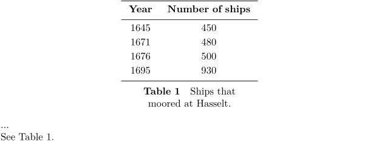

Contents
Summary
The environment \starttable ... \stoptable is an old and nearly obsolete way to handle tabular material
Settings
| \starttable[|...|][...=...,...] ... \stoptable | |
| [|...|] | template |
| ...=...,... | inherits from \setuptables |
Settings name
Description
The table entries are placed between the
\starttable
...
\stoptable
pair. Between the bracket pair your can specify the table format template using column separators
|
and format keys, or using the name of a defined table template (see
\definetabletemplate
).
There is a long wiki page about Table (deprecated) macros, and the macros have been superseded by different macros sets, so this page is intentionally kept short. The Tables page contains a quick overview of all the tabular macro environments and their pros and cons.
Examples
Example 1
The command \placetable on the first line has the same function as \placefigure. It takes care of spacing before and after the table and numbering. Furthermore the floating mechanism is initialised so the table will be placed at the most optimal location on the page.
-
\placetable[here][tab:ships]{Ships that moored at Hasselt.} \starttable[|c|c|] \HL \NC \bf Year \NC \bf Number of ships \NC\SR \HL \NC 1645 \NC 450 \NC\FR \NC 1671 \NC 480 \NC\MR \NC 1676 \NC 500 \NC\MR \NC 1695 \NC 930 \NC\LR \HL \stoptable ... See \in{Table}[tab:ships].
yields
- 
Notes
See also
- \setuptables
- tabl-tab.mkiv
- Tables/Deprecated/Table wiki manual page for tables using this macro set
- Tables for a global intro to the various table macro sets in ConTeXt
- \definetabletemplate